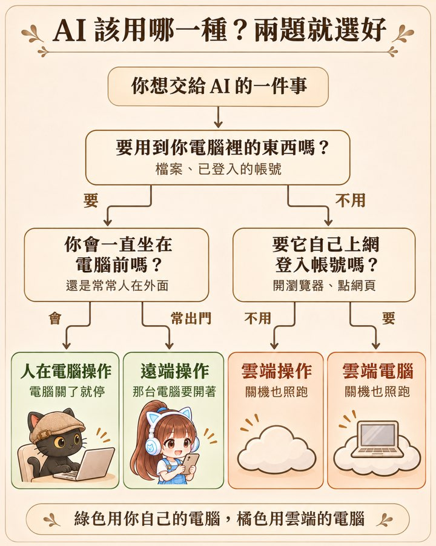

這篇在講什麼
AI Agent 是會自己動手做事的 AI。它在你關機之後還會不會繼續做，只看一件事：它跑在哪一台電腦上。跑在你的電腦，電腦關了它就停；跑在雲端的電腦，你關機它照樣做。
常見的用法分成四種：人在電腦操作、遠端操作、雲端操作、雲端電腦。這篇用生活裡會遇到的例子，講每一種要什麼條件、適合做什麼事，最後附一張流程圖，兩個問題就能挑出你該用哪一種。
- 只用過 ChatGPT 網頁版，想知道它為什麼碰不到你電腦裡檔案的人
- 想讓 AI 幫忙做事，但不知道電腦要不要一直開著的人
- 常出門，想用手機叫家裡電腦繼續做事的人
- 聽過 Codex、Claude Code、Grok Bot 這些名字，想知道它們差在哪的人
- 一張表看懂四種操作方式
- 一張流程圖，兩個問題挑出適合你的那一種
- 想用手機遙控家裡電腦之前，要先準備好的四件事
四種操作方式，一張表看完
| 方式 | AI 在哪台電腦上跑 | 你的電腦關了 | 它拿得到什麼 | 生活裡的例子 |
|---|---|---|---|---|
| 人在電腦操作 | 你眼前這台 | 停 | 電腦裡的檔案、已登入的帳號 | 坐在電腦前，請 AI 把一百張照片照日期改好檔名 |
| 遠端操作 | 你家裡那台 | 停（家裡那台要開著） | 那台電腦裡的檔案、已登入的帳號 | 人在高鐵上，用手機叫家裡電腦把報價單改好存成 PDF |
| 雲端操作 | 服務商的雲端機器 | 照跑 | 只有你上傳給它的資料 | 睡前丟十份會議紀錄給它整理重點，早上起來看結果；平常用的網頁版聊天 AI 也算這種 |
| 雲端電腦 | AI 自己一整台雲端電腦 | 照跑 | 它那台電腦上開的瀏覽器、登入的帳號 | 它有自己的瀏覽器，每天早上自己上網查資料、登入社群帳號回留言 |
怎麼選：每條路只要回答兩題
第一題：AI 要不要用到你電腦裡的檔案或已登入的帳號？
- 要：再問你會不會一直坐在電腦前。會，就是人在電腦操作；常出門，就是遠端操作。
- 不用：再問要不要它自己開瀏覽器、登入帳號做事。不用、只處理你上傳的資料，就是雲端操作；要，就是雲端電腦。
| 要用到你電腦裡的東西？ | 你的情況 | 適合哪一種 |
|---|---|---|
| 要 | 會一直坐在電腦前，用完就關機 | 人在電腦操作 |
| 要 | 常出門，想用手機叫家裡電腦做 | 遠端操作，家裡放一台一直開著的電腦 |
| 不用 | 資料可以上傳給它，想關機也繼續跑 | 雲端操作 |
| 不用 | 要它自己上網、登入帳號，二十四小時做事 | 雲端電腦 |

四種也可以混著用，不用只選一種。例如白天坐在電腦前請它整理檔案，晚上把整理好的資料丟給雲端寫報告。
人在電腦操作：AI 在你的電腦上做事，電腦關掉它就停
AI 在你眼前這台電腦上做事，讀得到你的檔案、用得到你已經登入的帳號，做什麼你都看得到。
把下載資料夾裡一百張照片照日期改檔名；把一整個資料夾的發票 PDF 整理成一張表；把桌面上亂放的檔案分類收好。
筆電合上蓋子就會睡，跑到一半的工作會中斷。要跑久一點的事，記得插電、把睡眠關掉，或乾脆交給後面三種。
遠端操作：人在外面，用手機叫家裡的電腦做
AI 一樣在家裡的電腦上跑，你用手機或平板下指令。它拿得到的東西跟你坐在電腦前一樣多，條件是家裡（或辦公室）那台要開著。
在高鐵上想到客戶要的報價單，用手機叫家裡電腦打開上週那份、改好數字、存成 PDF；開會中想到一份資料，叫它從電腦裡找出來整理成重點傳給你。
家裡電腦關機、睡著、當機，手機上按什麼都沒用。整套都靠這一台，它一停，手機端就什麼都做不了，出門前要確認它好好開著。
現在 OpenAI 的 Codex、Anthropic 的 Claude Code 都有手機遙控家裡電腦的功能。2026 年 9 月我在課堂上這樣說：「目前 Agent 裡面，桌面跟手機連動設定最穩、最簡單、最好用的，真的就是 Codex。」它的設定是：桌面版設定裡找「連線」，按新增跳出 QR Code，手機掃一下就連上。Claude Code 則是在電腦上把 Remote Control（遠端控制）打開，手機的 Claude App 就連得到。
- 人在外面，可以叫家裡的電腦先做嗎？：這一段只講可以用手機遙控，那篇有 Codex 四步設定的完整畫面，以及一條手機丟連結、家裡電腦寫好短文再發文的流程。
想用手機遙控家裡電腦，先準備好四件事
電源接著，把電腦的自動睡眠關掉。Codex 設定裡有「讓這台 Mac 維持喚醒」可以直接打開；Windows 在電源設定把睡眠改成「永不」。
有些服務在螢幕鎖定時讀不到你存好的登入資料，AI 會卡在「沒登入」。代價是走到電腦前的人都能用它，電腦要放在別人碰不到的地方。放在店裡、辦公室這種別人碰得到的地方，就別用這招，改交給雲端。
手機遙控的功能要在家裡電腦上先打開，出門前從手機丟一個小任務試試看。
人在外面時你只會打幾個字，事先寫好的步驟讓你只要說「照流程做」。
還有兩件事沒辦法靠遠端完成，一定要人回到電腦前：要輸入密碼或帳號授權碼這類機密資料的事，以及解鎖螢幕。
- 我的 Server 架在哪裡？：這一段只講家裡電腦要開著，那篇把混合式與全雲端兩套架構畫出來，說明一台 Mac mini 怎麼當本機工作中樞。
雲端操作：任務丟到雲端跑，電腦關了它也會繼續
任務交給服務商雲端的機器去跑，你的電腦關了它照樣做。
睡前丟十份會議紀錄給它整理成一份重點；請它查一個主題的公開資料寫成報告；把一個放在雲端的網站專案交給它改，早上起來看結果。
它碰不到你電腦裡的資料夾，也用不到你電腦上已經登入的帳號。要它處理的資料，得先上傳或放到它看得到的地方。
很多人第一次打開電腦版的 AI 工具會嚇一跳：之前在網頁版開的任務，電腦版裡什麼都沒有。原因就是那些任務都在雲端跑，從來沒有用到你的電腦。我在工作坊被問到時這樣講：「用網頁版，它就只在雲端。」
雲端電腦：AI 有一整台自己的雲端電腦，能開瀏覽器、能登入帳號
這一種比雲端操作多一步：AI 不只是在雲端跑任務，它有一整台自己的電腦，可以開瀏覽器、登入帳號、在網頁上點來點去。你關機，它那台照樣開著。
每天早上自己上幾個網站查價格、整理成一張表；登入社群帳號，定時回覆留言；幫你在訂位網站查有沒有空位。
把帳號交給雲端電腦登入，要先看平台的使用規範、顧好帳號安全。通常也比前幾種貴，是按月付費的服務。
像 xAI 的 Grok Bot 就是這種，它是附一整台雲端電腦的 AI 員工服務。我的 AI 小編朵拉（Threads 帳號簡介公開寫明她是 AI），就是由它的雲端電腦登入帳號、在留言底下回覆。
有些雲端任務也會自己開瀏覽器，雲端操作和雲端電腦的界線會越來越模糊。分辨時看兩件事：它能不能長時間一直開著，能不能登入你的帳號做事。
- 喜歡 Grok Bot 的 AI 員工模式，但每月 30 美元太貴，能自己架一個嗎？：這一段只講雲端電腦能做什麼，那篇比較三款程式碼公開、可以自己架的 AI 員工工具，以及免費和便宜的雲端主機怎麼選。
給你的 AI 讀的檢查清單（人可以跳過）
想讓 AI 在你不在電腦前時繼續做事，可以把這段貼給在你電腦上跑的 AI（例如 Claude Code、Codex 桌面版；網頁版的聊天 AI 檢查不了你的電腦）：
你可以怎麼開始
列出你想交給 AI 的三件事，每件照上面的流程圖問兩題。
在電腦前把連線設好、把維持喚醒打開，出門前從手機丟一個小任務。
找一件資料可以上傳、不急著看結果的事，睡前交給雲端，早上起來看。
- 人在外面，可以叫家裡的電腦先做嗎？：Codex 手機掃 QR Code 四步設定，與一條手機丟連結、家裡電腦發文的流程。
- 我的 Server 架在哪裡？：混合式與全雲端兩套架構，一台 Mac mini 當本機工作中樞。
- 喜歡 Grok Bot 的 AI 員工模式，但每月 30 美元太貴，能自己架一個嗎？：三款可以自己架的 AI 員工工具與雲端主機比較。
- 想學 Agent，我為什麼會先推薦 Mac？：要選一台放家裡一直開著的電腦之前，可以先看。
- ChatGPT Work、Codex、一般 ChatGPT 怎麼分工？：同樣從「會不會碰本機資料」切，用在 OpenAI 自家三個產品的分工。
想直接問我你的情況？
我每個月固定辦兩場免費線上講座，現場可以提問。要不要一台電腦一直開著、用哪一種方式最適合你的工作，講座上可以直接帶著你的情況來問。